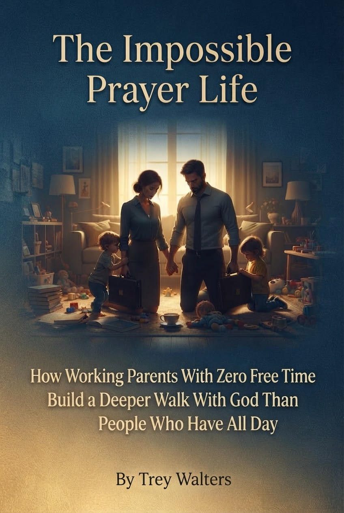

Ebook · Instant download
For working parents who are running on empty
Pray Every Day In Just 5 Minutes, Even With Long Shifts And Kids
The Impossible Prayer Life: a simple daily prayer plan for busy moms and dads
You love God. You want to pray. But by the time the shift is over, dinner is made and the kids are finally asleep, you have nothing left.
So prayer shrinks into a rushed sentence in the car, and the guilt follows you to bed.
The Impossible Prayer Life shows you how to build a real, daily walk with God in just five minutes, using your own hand as the guide. No app. No quiet room. No extra hours.
Fillable prayer maps
Scripture cards
A 30-day prayer tracker
$9.99
Start Praying Again for $9.99Instant download. Start reading on your phone today.
Does this sound like you?
You wake up already behind, and prayer gets pushed to "later."
You kneel at night and fall asleep before you say amen.
You feel guilty watching other Christians talk about their quiet time.
You've tried early mornings, prayer apps and long devotionals, and none of them fit your real life.
You miss feeling close to God, but you honestly don't know where the time would come from.
You're not a bad Christian. You were just handed a prayer routine built for someone with free time. You need one built for a working parent.
What changes when you have a plan that fits your day
You pray every day, even on the busiest ones, in about five minutes.
You never sit there wondering what to say. Your hand walks you through it.
You can pray in the car, at the sink, on your break or at bedtime with your kids.
The guilt lifts, and you start to feel God close again.
What's inside
The 5-minute hand prayer method. One simple pattern you can remember anywhere, with no book open and no app.
Fillable prayer maps so your prayers stay focused on what matters to your family.
Scripture cards to pray God's Word over your home, your work and your children.
A 30-day tracker so you can see yourself build the habit one day at a time.
This is for you if
You're a mom or dad juggling work, kids and a full schedule
You want a daily prayer life but keep falling off
You want something simple you can start today
This is not for you if
You're looking for a deep theology textbook
You're not willing to give God five minutes a day
The price
The Impossible Prayer Life is $9.99, less than a takeout meal. It's an instant download you can start reading on your phone tonight, and in 30 days prayer can be part of your normal day instead of the thing you keep promising to get to.
Questions parents ask
I really don't have time. Will this actually work for me?
Yes. It was written for parents with long shifts and full homes. The method takes about five minutes, and you can do it in the car, at the sink or on a break. You don't need a quiet room or an early alarm.
I've tried to build a prayer habit before and quit. What's different?
Most prayer routines ask for more time than a working parent has, so they fall apart by week two. This one fits into the day you already have, and the 30-day tracker helps you keep going one small step at a time.
What if I don't know what to say when I pray?
That's what the hand method is for. Each finger reminds you what to pray about next, so you never sit there stuck. The prayer maps and scripture cards give you words when you need them.
How do I get it?
It's an instant digital download. After checkout you can read it on your phone, tablet or computer right away, and print the prayer maps and tracker if you like.
Is it only for moms, or for dads too?
Both. It's for any parent trying to juggle work, kids and a walk with God.
What you get
- The Impossible Prayer Life Ebook.pdf1020 KB